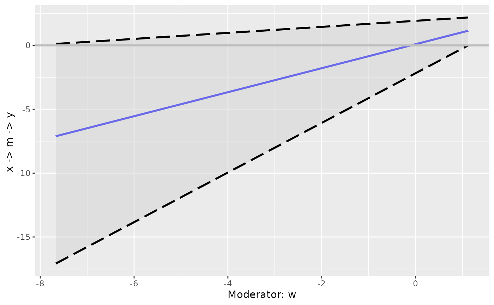
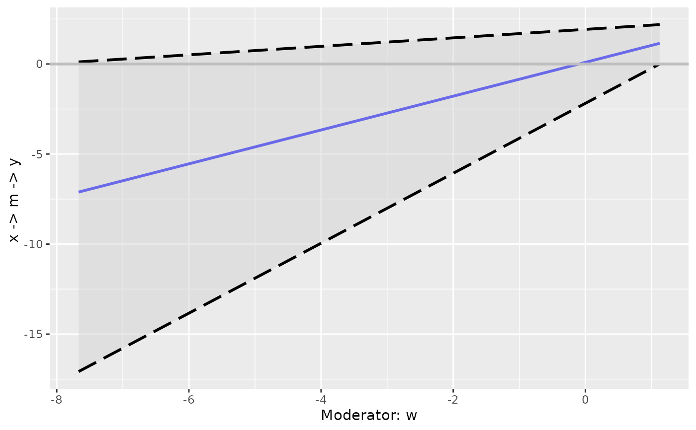

Use the pseudo Johnson-Neyman approach (Hayes, 2022) to find the range of values of a moderator in which the conditional effect is not significant.
Usage
pseudo_johnson_neyman(
object = NULL,
w_lower = NULL,
w_upper = NULL,
optimize_method = c("uniroot", "optimize"),
extendInt = c("no", "yes", "downX", "upX"),
tol = .Machine$double.eps^0.25,
level = 0.95
)
johnson_neyman(
object = NULL,
w_lower = NULL,
w_upper = NULL,
optimize_method = c("uniroot", "optimize"),
extendInt = c("no", "yes", "downX", "upX"),
tol = .Machine$double.eps^0.25,
level = 0.95
)
# S3 method for class 'pseudo_johnson_neyman'
print(x, digits = 3, ...)Arguments
- object
A
cond_indirect_effects-class object, which is the output ofcond_indirect_effects().- w_lower
The smallest value of the moderator when doing the search. If set to
NULL,the default, it will be 10 standard deviations below mean, which should be small enough.- w_upper
The largest value of the moderator when doing the search. If set to
NULL,the default, it will be 10 standard deviations above mean, which should be large enough.- optimize_method
The optimization method to be used. Either
"uniroot"(the default) or"optimize", corresponding tostats::uniroot()andstats::optimize(), respectively.- extendInt
Used by
stats::uniroot(). If"no", then search will be conducted strictly withinc(w_lower, w_upper). Otherwise, the range is extended based on this argument if the solution is not found. Please refer tostats::uniroot()for details.- tol
The tolerance level used by both
stats::uniroot()andstats::optimize().- level
The level of confidence of the confidence level. One minus this level is the level of significance. Default is .95, equivalent to a level of significance of .05.
- x
The output of
pseudo_johnson_neyman().- digits
Number of digits to display. Default is 3.
- ...
Other arguments. Not used.
Value
A list of the class pseudo_johnson_neyman
(with a print method, print.pseudo_johnson_neyman()).
It has these major elements:
cond_effects: An output ofcond_indirect_effects()for the two levels of the moderator found.w_min_valid: Logical. IfTRUE, the conditional effect is just significant at the lower level of the moderator found, and so is significant below this point. IfFALSE, then the lower level of the moderator found is just the lower bound of the range searched, that is,w_lower.w_max_valid: Logical. IfTRUE, the conditional effect is just significant at the higher level of the moderator found, and so is significant above this point. IfFALSE, then the higher level of the moderator found is just the upper bound of the range searched, that is,w_upper.
Details
This function uses the pseudo Johnson-Neyman approach proposed by Hayes (2022) to find the values of a moderator at which a conditional effect is "nearly just significant" based on confidence interval. If an effect is moderated, there will be two such points (though one can be very large or small) forming a range. The conditional effect is not significant within this range, and significant outside this range, based on the confidence interval.
This function receives the output
of cond_indirect_effects()
and search for, within
a specific range, the two values of
the moderator at which
the conditional effect is "nearly just significant",
that is, the confidence interval
"nearly touches" zero.
Note that numerical method is used to find the points. Therefore, strictly speaking, the effects at the end points are still either significant or not significant, even if the confidence limit is very close to zero.
Though numerical method is used,
if the test is conducted using the
standard error (see below), the result is
equivalent to the (true)
Johnson-Neyman (1936) probing.
The function johnson_neyman() is
just an alias to pseudo_johnson_neyman(),
with the name consistent with what
it does in this special case.
Supported Methods
This function supports models fitted
by lm(), lavaan::sem(),
and lavaan.mi::sem.mi(). This function
also supports both bootstrapping
and Monte Carlo confidence intervals.
It also supports conditional
direct paths (no mediator) and
conditional indirect paths (with one
or more mediator), with x and/or
y standardized.
Requirements
To be eligible for using this function, one of these conditions must be met:
One form of confidence intervals (e.g, bootstrapping or Monte Carlo) must has been requested (e.g., setting
boot_ci = TRUEormc_ci = TRUE) when callingcond_indirect_effects().Tests can be done using stored standard errors: A path with no mediator and both the
x- andy-variables are not standardized.
For pre-computed confidence intervals,
the confidence level of the confidence
intervals adopted when calling
cond_indirect_effects() will be used
by this function.
For tests conducted by standard
errors, the argument level is used
to control the level of significance.
Possible failures
Even if a path has only one moderator, it is possible that no solution, or more than one solution, is/are found if the relation between this moderator and the conditional effect is not linear.
Solution may also be not found if the conditional effect is significant over a wide range of value of the moderator.
It is advised to use plot_effect_vs_w()
to examine the relation between the
effect and the moderator first before
calling this function.
Methods (by generic)
print(pseudo_johnson_neyman): Print method for output ofpseudo_johnson_neyman().
References
Johnson, P. O., & Neyman, J. (1936). Test of certain linear hypotheses and their application to some educational problems. Statistical Research Memoirs, 1, 57–93.
Hayes, A. F. (2022). Introduction to mediation, moderation, and conditional process analysis: A regression-based approach (Third edition). The Guilford Press.
Examples
library(lavaan)
dat <- data_med_mod_a
dat$wx <- dat$x * dat$w
mod <-
"
m ~ x + w + wx
y ~ m + x
"
fit <- sem(mod, dat)
# In real research, R should be 2000 or even 5000
# In real research, no need to set parallel and progress to FALSE
# Parallel processing is enabled by default and
# progress is displayed by default.
boot_out <- do_boot(fit,
R = 40,
seed = 4314,
parallel = FALSE,
progress = FALSE)
out <- cond_indirect_effects(x = "x", y = "y", m = "m",
wlevels = "w",
fit = fit,
boot_ci = TRUE,
boot_out = boot_out)
# Visualize the relation first
plot_effect_vs_w(out)
 out_jn <- pseudo_johnson_neyman(out)
out_jn
#>
#> == Pseudo Johnson-Neyman Probing ==
#>
#> The conditional effect is not significant when w is greater than -7.669
#> and less than 1.124, at 0.05 level of significance.
#>
#> -- Note --
#> - The lower bound of the range of nonsignificance is below the range
#> being searched (-7.669 to 12.028). Set a lower value for 'w_lower' if
#> necessary.
#> - The upper bound of the range of nonsignificance is above the range
#> being searched (-7.669 to 12.028). Set a higher value for 'w_upper' if
#> necessary.
#>
#> == Conditional indirect effects ==
#>
#> Path: x -> m -> y
#> Conditional on moderator(s): w
#> Moderator(s) represented by: w
#>
#> [w] (w) ind CI.lo CI.hi Sig m~x y~m
#> 1 High 1.124 1.148 -0.000 2.187 1.188 0.966
#> 2 Low -7.669 -7.112 -17.079 0.116 -7.361 0.966
#>
#> - [CI.lo to CI.hi] are 95.0% percentile confidence intervals by
#> nonparametric bootstrapping with 40 samples.
#> - The 'ind' column shows the conditional indirect effects.
#> - ‘m~x’,‘y~m’ is/are the path coefficient(s) along the path conditional
#> on the moderator(s).
#>
# Plot the range
plot_effect_vs_w(out_jn$cond_effects)

out_jn <- pseudo_johnson_neyman(out)
out_jn
#>
#> == Pseudo Johnson-Neyman Probing ==
#>
#> The conditional effect is not significant when w is greater than -7.669
#> and less than 1.124, at 0.05 level of significance.
#>
#> -- Note --
#> - The lower bound of the range of nonsignificance is below the range
#> being searched (-7.669 to 12.028). Set a lower value for 'w_lower' if
#> necessary.
#> - The upper bound of the range of nonsignificance is above the range
#> being searched (-7.669 to 12.028). Set a higher value for 'w_upper' if
#> necessary.
#>
#> == Conditional indirect effects ==
#>
#> Path: x -> m -> y
#> Conditional on moderator(s): w
#> Moderator(s) represented by: w
#>
#> [w] (w) ind CI.lo CI.hi Sig m~x y~m
#> 1 High 1.124 1.148 -0.000 2.187 1.188 0.966
#> 2 Low -7.669 -7.112 -17.079 0.116 -7.361 0.966
#>
#> - [CI.lo to CI.hi] are 95.0% percentile confidence intervals by
#> nonparametric bootstrapping with 40 samples.
#> - The 'ind' column shows the conditional indirect effects.
#> - ‘m~x’,‘y~m’ is/are the path coefficient(s) along the path conditional
#> on the moderator(s).
#>
# Plot the range
plot_effect_vs_w(out_jn$cond_effects)
